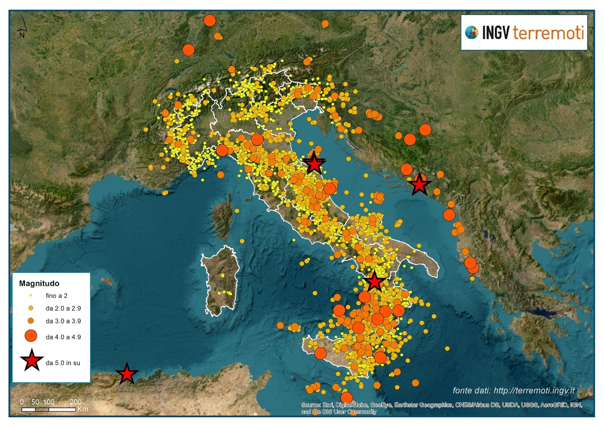

Terremoti in Italia

L’Italia, è un paese molto soggetto ad eventi sismici quali terremoti e
maremoti, specialmente centro-sud;
Su circa 1300 terremoti
avvenuti in europa, dopo l’anno 2000, circa 500 sono stati registrati
solo in Italia, dove spesso ne succedono di molto gravosi:
- Il terremoto di Messina e Reggio Calabria avvenuto nel 1908, ha provocato una scossa da 7.5 magnitudo, che lo rende il secondo sisma più potente della storia italiana, con un bilancio di 100.000 vittime.
- Il terremoto dell’Abruzzo, più recente, è un insieme di scosse avvenute tra il 2008 ed il 2012, che hanno fatto registrare 309 vittime, oltre 1600 feriti e danni per più di 10 miliardi di euro
L’Italia è organizzata bene con strutture per evitare che possano ripresentarsi disastri come quello dell'Aquila, che limitano i danni il possibile.